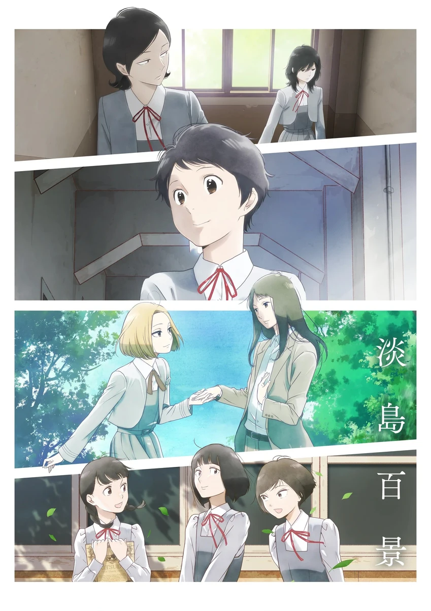

COMPLETE RECORD · Pages 轻量资料
淡岛百景
淡島百景
别名
- Awajima Hyakkei
- Awashima Hyakkei, One Hundred Views of Awajima
- 形式
- TV
- 首播
- 2026-04-09
- 集数
- 12 集
- 评分
- 7.7
- 评分人数
- 2242
SYNOPSIS
简介
淡岛歌剧学校里，梦想着站上舞台的少女们自全国各地齐聚而来。憧憬着歌舞剧明星而入学的新生・若菜。背负着挚友的思念努力学习的舍长・绢枝。散发出压倒性存在感的，美丽特待生・绘美。憧憬她、嫉妒她，并不断渴求她目光的桂子与其家人――。她们无可替代的日子，随着人物视角的转换，在彼此交错之中缓缓连结起来。活在当下的少女们的，清新而鲜烈的青春涂鸦。
[简介原文] 淡島（あわじま）歌劇学校には、舞台に立つことを夢みる少女たちが全国から集まってくる。 ミュージカルスターに憧れて入学した、新入生の若菜。 親友の思いを背負って学び続ける、寮長の絹枝。 圧倒的な存在感を放つ、美しき特待生の絵美。 彼女に憧れ、妬み、視線を求め続けた桂子とその家族――。 彼女たちのかけがえのない日々が、人物の視点を変え、交錯しながらゆるやかに繋がっていく。 今を生きる少女たちの、瑞々しく鮮烈な青春グラフィティ。
EPISODE LOG
正片章节
已收录 12 条正片章节
- 1田畑若菜与竹原王子/竹原绢枝与上田良子 首播：2026-04-09时长：24 分钟
- 2冈部绘美与小野田幸惠/伊吹桂子与田畑若菜 首播：2026-04-16时长：24 分钟
- 3伊吹桂子与日柳夏子/山路瑠璃子与日柳夏子 首播：2026-04-23时长：24 分钟
- 4四方木田佳代与山县沙织/田畑若菜与田畑佐江子/柏木拓人与吉村清日 首播：2026-04-30时长：24 分钟
- 5大久保麻美/浅香绿与浅上玲央 首播：2026-05-07时长：24 分钟
- 6淡岛怪谈 首播：2026-05-14时长：24 分钟
- 7山县沙织与武内实花子/武内实花子与山县沙织 首播：2026-05-21时长：24 分钟
- 8小鸟游沙罗/藤泽江里/雅乐川静香 首播：2026-05-28时长：24 分钟
- 9淡岛校庆/柏原明穗与田畑若菜 首播：2026-06-04时长：24 分钟
- 10长谷川慎尔与夏木诗子/城芙美子的女儿/伊吹桂子与冈部绘美 首播：2026-06-11时长：24 分钟
- 11冈部绘美与伊吹桂子 首播：2026-06-18时长：24 分钟
- 12淡岛百景 首播：2026-06-25时长：24 分钟